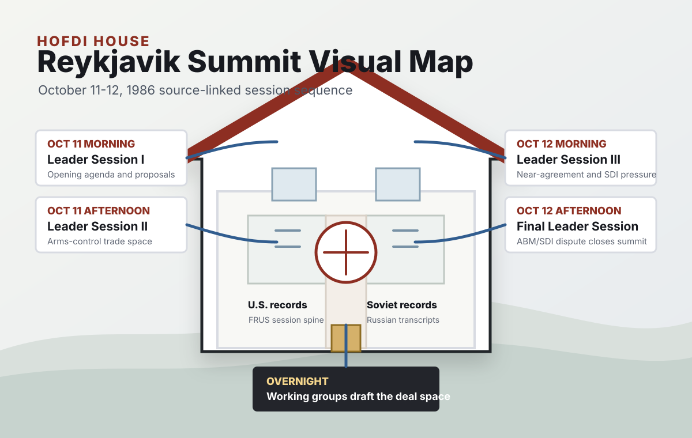

Official FRUS document register
Reagan and Gorbachev at Reykjavik
A focused documentary edition of the lead-up to, meetings at, and aftermath of the October 11-12, 1986 Reykjavik Summit. The register draws from four published Foreign Relations volumes, and every external record link opens an individual FRUS document on history.state.gov.
0
documents
0
core records
0
FRUS volumes

Hofdi House
Summit Visualizations

Two-Day Source Spine
People and evidence
Negotiator Connections
Priority
Phase
Side
Sort
0 documents shown
Register
FRUS Documents
Chronology
Core Timeline
Document scope